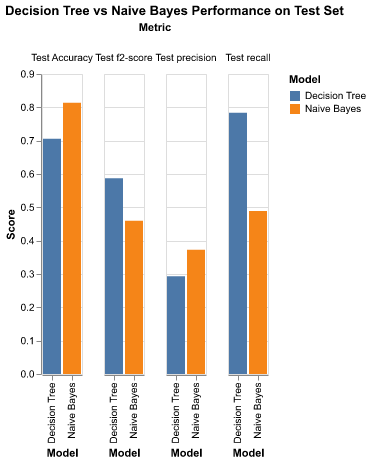
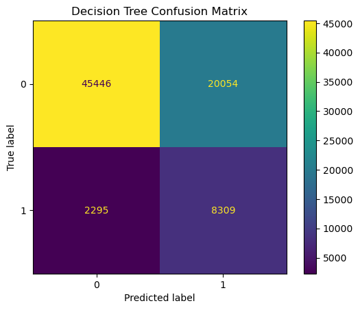

| Unnamed: 0 | Model | Test Accuracy | Test f2-score | Test recall | Test precision |
|---|---|---|---|---|---|
| 0 | Decision Tree | 0.706 | 0.587 | 0.784 | 0.293 |
| 1 | Naive Bayes | 0.814 | 0.46 | 0.489 | 0.373 |
Diabetes Prediction
Summary
In this project we attempt to build a model to predict diabetes disease. We compared a decision tree model and naive bayes model and found the decision tree is stronger in this context. We used f2-score as our scoring function because detecting diabetes is the priority: a false negative could be much worse then a false positive.
In the test dataset: the decision tree model correctly detected 8283 of 10604 positive cases (recall rate is about 78%). This result does come at a fairly significant cost in terms of false positives (precision rate is about 30%) with 19650 false positives. Depending on the actual cost of false positive this may need significant improvement to be a viable screening model.
Introduction
In Canada and the USA approximately 10% of people are living with diabetes. In Canada in 2023 approximately 3.7 million people were living with diabetes and in the USA in 2021 approzimately 38.4 million people were living with diabetes. (“Snapshot of Diabetes in Canada, 2023” (2023)) In the USA it is the 8th leading cause of death. (Rios et al. (2017)) Globally an estimated 44% of people living with diabetes are undiagnosed. (Stafford et al. (2025))
In this project we try to predicted diabetes disease based on common health factors. A reliable model could help to prescreen people and recommend following up with a physician for people who are at risk. Given the large number of people living with undiagnosed diabetes this could potentially have a significant positive impact of world health. The target for our model with be the diabetes column from our dataset: (0 = no diabetes/pre-diabetes, 1 = diabetes).
The analysis uses the American CDC Behavioural Risk Factor Surveillance System (BRFSS) 2015 Diabetes Health Indicators dataset (UCI ID 891), containing 253,680 survey responses with 21 health-related features and a binary diabetes outcome. (Dane and Teboul (2021))
Methods
Packages
This analysis was performed in Python 3.11.6 (Python 3.11.6 Documentation 2021-2025). Additionally, here is a list of the Python packages used within the analysis with brief explanation:
| Package | Version | Use case | Reference |
|---|---|---|---|
numpy |
1.26.4 |
General analysis use | NumPy Documentation (2008-2022) |
pandas |
2.1.2 |
Data management/processing | team (2020), McKinney (2010) |
pandera |
0.27.0 |
Data valiadion | Bantilan (2020) |
altair |
5.1.2 |
Generating plots | VanderPlas et al. (2018), Satyanarayan et al. (2017) |
scikit-learn |
1.3.2 |
Model creation and evaluation | Pedregosa et al. (2011) |
ucimlrepo |
0.0.7 |
Data extraction | Kelly, Longjohn, and Nottingham (2021) |
deepchecks |
0.18.1 |
Data validation | Chorev et al. (2022) |
click |
8.3.1 |
Script tool | Pallets (2020) |
quarto |
1.8.26 |
Report creation | Allaire et al. (2025) |
tabulate |
0.9.0 |
Table formatting | Astanin (2025) |
Modeling Approach
The data were split 70/30 into training and test sets with stratification on the target.
Two classifiers were trained and tuned using 5-fold cross-validated grid search with f2-score as the scoring metric. We chose to use f2-score. In our dataset is fairly unballanced with the positive class making up about 14% of the data. Furthermore, we deem it to be a much large issue to miss true positive than to miss-identify negatives. This is why we have chosen to use f2-score: f2-score places twice as much emphasis on recall compared to precision.
Decision Tree (class_weight=‘balanced’)
Hyperparameters: max_depth: {6,8,10,12,14}, min_samples_leaf: {175, 200, 225, 250}
Best parameters: max_depth=10, min_samples_leaf=225
Best CV f2-score = 0.587Bernoulli Naive Bayes (with StandardScaler preprocessing)
Hyperparameters: alpha: {1e-3, 1e-2, 1e-1, 1e0, 1e1, 1e2, 1e3, 1e4}
Best parameters: alpha=0.001
Best CV f2-score = 0.46
Results
EDA
Data Summary
| Unnamed: 0 | count | mean | std | min | 25% | 50% | 75% | max |
| HighBP | 177576.0 | 0.4293 | 0.495 | 0.0 | 0.0 | 0.0 | 1.0 | 1.0 |
| HighChol | 177576.0 | 0.4228 | 0.494 | 0.0 | 0.0 | 0.0 | 1.0 | 1.0 |
| CholCheck | 177576.0 | 0.9627 | 0.1896 | 0.0 | 1.0 | 1.0 | 1.0 | 1.0 |
| BMI | 177576.0 | 28.385 | 6.5916 | 12.0 | 24.0 | 27.0 | 31.0 | 98.0 |
| Smoker | 177576.0 | 0.4433 | 0.4968 | 0.0 | 0.0 | 0.0 | 1.0 | 1.0 |
| Stroke | 177576.0 | 0.0407 | 0.1976 | 0.0 | 0.0 | 0.0 | 0.0 | 1.0 |
| HeartDiseaseorAttack | 177576.0 | 0.094 | 0.2919 | 0.0 | 0.0 | 0.0 | 0.0 | 1.0 |
| PhysActivity | 177576.0 | 0.7563 | 0.4293 | 0.0 | 1.0 | 1.0 | 1.0 | 1.0 |
| Fruits | 177576.0 | 0.6351 | 0.4814 | 0.0 | 0.0 | 1.0 | 1.0 | 1.0 |
| Veggies | 177576.0 | 0.8122 | 0.3905 | 0.0 | 1.0 | 1.0 | 1.0 | 1.0 |
| HvyAlcoholConsump | 177576.0 | 0.0563 | 0.2305 | 0.0 | 0.0 | 0.0 | 0.0 | 1.0 |
| AnyHealthcare | 177576.0 | 0.9513 | 0.2153 | 0.0 | 1.0 | 1.0 | 1.0 | 1.0 |
| NoDocbcCost | 177576.0 | 0.0845 | 0.2782 | 0.0 | 0.0 | 0.0 | 0.0 | 1.0 |
| GenHlth | 177576.0 | 2.5128 | 1.0685 | 1.0 | 2.0 | 2.0 | 3.0 | 5.0 |
| MentHlth | 177576.0 | 3.1833 | 7.4056 | 0.0 | 0.0 | 0.0 | 2.0 | 30.0 |
| PhysHlth | 177576.0 | 4.2542 | 8.7248 | 0.0 | 0.0 | 0.0 | 3.0 | 30.0 |
| DiffWalk | 177576.0 | 0.1682 | 0.374 | 0.0 | 0.0 | 0.0 | 0.0 | 1.0 |
| Sex | 177576.0 | 0.4408 | 0.4965 | 0.0 | 0.0 | 0.0 | 1.0 | 1.0 |
| Age | 177576.0 | 8.0321 | 3.0558 | 1.0 | 6.0 | 8.0 | 10.0 | 13.0 |
| Education | 177576.0 | 5.049 | 0.9863 | 1.0 | 4.0 | 5.0 | 6.0 | 6.0 |
| Income | 177576.0 | 6.0514 | 2.0729 | 1.0 | 5.0 | 7.0 | 8.0 | 8.0 |
| diabetes | 177576.0 | 0.1393 | 0.3463 | 0.0 | 0.0 | 0.0 | 0.0 | 1.0 |
Table 2 displays a numerical distribution of the dataset, where as Table 3 lists the first 5 rows transposed of the training dataset as example observations used. Both tables have been transposed from their original form for more syntactical presentation. All features of the dataset consist entirely of integer values, and by all count values being identically 177576 (the number of observations in the training dataset), there exist no null values, making the preprocessing step of the analysis relatively simple.
| 0 | 1 | 2 | 3 | 4 | |
|---|---|---|---|---|---|
| HighBP | 0 | 0 | 1 | 0 | 1 |
| HighChol | 1 | 0 | 1 | 0 | 0 |
| CholCheck | 1 | 1 | 1 | 1 | 1 |
| BMI | 23 | 25 | 28 | 25 | 30 |
| Smoker | 0 | 0 | 0 | 0 | 1 |
| Stroke | 0 | 0 | 0 | 0 | 0 |
| HeartDiseaseorAttack | 0 | 0 | 0 | 0 | 0 |
| PhysActivity | 1 | 1 | 1 | 0 | 1 |
| Fruits | 1 | 1 | 0 | 1 | 1 |
| Veggies | 1 | 1 | 1 | 1 | 1 |
| HvyAlcoholConsump | 0 | 0 | 0 | 0 | 0 |
| AnyHealthcare | 1 | 1 | 1 | 1 | 1 |
| NoDocbcCost | 0 | 0 | 0 | 0 | 1 |
| GenHlth | 1 | 3 | 2 | 2 | 4 |
| MentHlth | 0 | 0 | 15 | 0 | 30 |
| PhysHlth | 0 | 30 | 2 | 0 | 15 |
| DiffWalk | 0 | 0 | 0 | 0 | 0 |
| Sex | 0 | 0 | 1 | 0 | 0 |
| Age | 10 | 12 | 6 | 8 | 8 |
| Education | 6 | 6 | 5 | 5 | 4 |
| Income | 8 | 7 | 6 | 7 | 4 |
| diabetes | 0 | 0 | 0 | 0 | 0 |
Visualizations

For this supervised learning problem, all observations are labelled as either 0, indicating a negative label for no diabetes, or 1, indicating a positive label for either diabetes or pre-diabetes. From Figure 1, the class distribution is imbalanced with roughly 14% of observations labelled positive for diabetes. This motivates using F2 score as our metric; in this data, a false negative is more problematic than a false positive, thus recall rate is prioritized over precision rate. The exact equation for the F2 score used within model evaluation is as follows:
\[F_2 = \frac{5*\text{precision}*\text{recall}}{(4*\text{precision}+\text{recall})}\]
Continuing the EDA, Figure 2 displays the distribution of all binary features, where the labels f = a, d = b \((a,b \in \{0,1\})\) indicate the frequencey that an observation had value a in the given feature, and value b in the diabetes label.

There is a significant variance in the distributions of the binary features; Smoker and Sex have similar number of observations where f = 0 compared to f = 1, where as a feature like Stroke is heavily weighted to f = 0, indicating very few observations indicate they have had a stroke before. Due to the high number of observations in the dataset, even where there are imbalances, we can expect there to be enough observations with either a positive (1) or negative (0) value for any given binary feature that should prevent low sample size bias. HighBP, HighChol, and Smoker all have more observations with f = 0 than f = 1, but in all of those features, the frequency of f = 1, d = 1 labels exceed that of f = 0, d = 1 labels, which indicate that we can expect that the model will indicate an association with these risks factors and a risk of diabetes.


Figure 4 takes a random sample of 1000 observations so that the boxplot is not overly populated and that the density of the points visibly correlates with Figure 3 more closely. From analyzing both charts, we can make the following brief observations about each non-binary feature:
Agehas been encoded to a 13-point scale that is somewhat normally distributed with a slight negative skew.BMIis a normally distributed feature with several extreme upper outliers that go up to 98. A BMI of 98 for someone that is 5 feet tall would result in a weight of roughly 500 pounds Keys et al. (2014), which is an outlier, but still reasonably possible that this is considered an accurate observation.Educationis on a 6-point scale, whileGenHlthis on a 5-point scale. Both of these features have the option to be preprocessed categorically, but since these are ordinal in nature, using a standard scaler on these features is a reasonable option this analysis goes with.MentHlthandPhysHlthhave the majority of observations with a value of 0
Most importantly, with all of the varying scales these features are on, it indicates that a StandardScaler() can be used on all numerical features to normalize the values of each feature into identical normal distributions.

Lastly with Figure 5, the main observation is that the strongest non-trivial feature-feature correlation does not exceed an absolute magnitued of 0.7. There are several significantly positively correlated feature pairs (PhysHlth-GenHlth, PhysHlth-DiffWalk, Income-Education, GenHlth-DiffWalk) and several significantly negative correlated feature pairs (DiffWalk-Income, GenHlth-Income). Noticably, Income, DiffWalk, and GenHlth appear in both the most positively and most negatively correlated feature pairs and have higher overall correlations with other features compared to other features such as Sex, Smoker, Stroke, and Veggies from the overall darker shades of green and orange in the correlation heatmap. With the diabetes feature, it is most positively correlated with GenHlth and most negatively correlated with Income.
Modeling
Model Fitting
The data were split 70/30 into training and test sets with stratification on the target.
Two classifiers were trained and tuned using 5-fold cross-validated grid search with f2-score as the scoring metric. We chose to use f2-score. In our dataset is fairly unballanced with the positive class making up about 14% of the data. Furthermore, we deem it to be a much large issue to miss true positive than to miss-identify negatives. This is why we have chosen to use f2-score: f2-score places twice as much emphasis on recall compared to precision.
Decision Tree (class_weight=‘balanced’)
Hyperparameters: max_depth: {6,8,10,12,14}, min_samples_leaf: {175, 200, 225, 250}
Best parameters: max_depth=10, min_samples_leaf=225
Best CV f2-score = 0.587Bernoulli Naive Bayes (with StandardScaler preprocessing)
Hyperparameters: alpha: {1e-3, 1e-2, 1e-1, 1e0, 1e1, 1e2, 1e3, 1e4}
Best parameters: alpha=0.001
Best CV f2-score = 0.46
Results
Performance Table
The following table summarizes the performance metrics for our two models evaluated on the test set:
| Unnamed: 0 | Model | Test Accuracy | Test f2-score | Test recall | Test precision |
|---|---|---|---|---|---|
| 0 | Decision Tree | 0.706 | 0.587 | 0.784 | 0.293 |
| 1 | Naive Bayes | 0.814 | 0.46 | 0.489 | 0.373 |
As shown in Table 4, the Decision Tree model demonstrates superior performance across all evaluation metrics compared to the Naive Bayes model. The Decision Tree achieves higher accuracy, f2-score, recall, and precision scores, making it the optimal choice for our diabetes prediction task.
Performance Visualization

The performance comparison in Figure 6 demonstrates that the Decision Tree model outperforms the Naive Bayes model across all evaluation metrics.
Confusion Matrix

The confusion matrix in Figure 7 shows the detailed classification performance of our best model. The model correctly identified a significant portion of the test cases, demonstrating strong predictive capability.
Discussion
The current performance of the Decision Tree model is likely already good enough to offer some benefit in the real world given the large number of people with undiagnosed diabetes. However, the recall score of 78.4% could likely be improved, and the precision score of 29.3% definitely leaves something to be desired.
We were surprised by the high rate of false positives shown in Figure 7, which might be an indication of how many non-diabetic people are at risk. Further improvements to predicting diabetes could likely be found by trying a wider variety of model types and using a wider hyperparameter search, and possibly through more feature engineering. A future study could be done to find a smaller set of the most easy to obtain features, as such a model would be more usable by the average person.
Some work is needed to determine this smaller number of easy to obtain features that doesn’t significantly reduce model performance. Another question is whether a regression model could be made that predicts a person’s risk as a percent chance of developing diabetes, though longitudinal data might be required for this type of prediction.
References
Allaire, J. J., Charles Teague, Carlos Scheidegger, Yihui Xie, Christophe Dervieux, and Gordon Woodhull. 2025. “Quarto.” https://doi.org/10.5281/zenodo.5960048.
Astanin, Sergeio. 2025. “Tabulate: Pretty-Print Tabular Data in Python.” https://github.com/astanin/python-tabulate.
Bantilan, Niels. 2020. “Pandera: Statistical Data Validation of Pandas Dataframes.” In Proceedings of the 19th Python in Science Conference, edited by Meghann Agarwal, Chris Calloway, Dillon Niederhut, and David Shupe, 116–24. https://doi.org/ 10.25080/Majora-342d178e-010 .
Chorev, Shir, Philip Tannor, Dan Ben Israel, Noam Bressler, Itay Gabbay, Nir Hutnik, Jonatan Liberman, Matan Perlmutter, Yurii Romanyshyn, and Lior Rokach. 2022. “Deepchecks: A Library for Testing and Validating Machine Learning Models and Data.” https://arxiv.org/abs/2203.08491.
Dane, Sohier, and Alex Teboul. 2021. “Diabetes Health Indicators Dataset.” https://www.kaggle.com/datasets/alexteboul/diabetes-health-indicators-dataset/data; Center of Disease Control.
Kelly, Markelle, Rachel Longjohn, and Kolby Nottingham. 2021. “The UCI Machine Learning Repository.” University of California, Irvine, School of Information; Computer Sciences. http://archive.ics.uci.edu/ml.
Keys, Ancel, Flaminio Fidanza, Martti J Karvonen, Noburu Kimura, and Henry L Taylor. 2014. “Indices of Relative Weight and Obesity*.” International Journal of Epidemiology 43 (3): 655–65. https://doi.org/10.1093/ije/dyu058.
McKinney, Wes. 2010. “Data Structures for Statistical Computing in Python.” In Proceedings of the 9th Python in Science Conference, edited by Stéfan van der Walt and Jarrod Millman, 56–61. https://doi.org/ 10.25080/Majora-92bf1922-00a .
NumPy Documentation. 2008-2022. https://numpy.org/doc/1.26/.
Pallets. 2020. Click. https://click.palletsprojects.com/.
Pedregosa, F., G. Varoquaux, A. Gramfort, V. Michel, B. Thirion, O. Grisel, M. Blondel, et al. 2011. “Scikit-Learn: Machine Learning in Python.” Journal of Machine Learning Research 12: 2825–30.
Python 3.11.6 Documentation. 2021-2025. https://docs.python.org/release/3.11.6/reference/index.html.
Rios, Nilka Burrows, Isreal Hora, Linda S. Geiss, Edward W. Gregg, and Ann Albright. 2017. “Incidence of End-Stage Renal Disease Attributed to Diabetes Among Persons with Diagnosed Diabetes — United States and Puerto Rico.” Incidence of End-Stage Renal Disease Attributed to Diabetes Among Persons with Diagnosed Diabetes — United States and Puerto Rico, no. 66(43): 1165–70.
Satyanarayan, Arvind, Dominik Moritz, Kanit Wongsuphasawat, and Jeffrey Heer. 2017. “Vega-Lite: A Grammar of Interactive Graphics.” IEEE Transactions on Visualization and Computer Graphics 23 (1): 341–50.
“Snapshot of Diabetes in Canada, 2023.” 2023. https://www.canada.ca/en/public-health/services/publications/diseases-conditions/snapshot-diabetes-canada-2023.html; Public Health Agency of Canada.
Stafford, Lauryn K, Anna Gage, Yvonne Yiru Xu, Madeleine Conrad, Ismael Barreras Beltran, and Edward J Boyko. 2025. “Global, Regional, and National Cascades of Diabetes Care, 2000–23: A Systematic Review and Modelling Analysis Using Findings from the Global Burden of Disease Study.” The Lancet Diabetes & Endocrinology, no. 13(11): 924–34.
team, The pandas development. 2020. “Pandas-Dev/Pandas: Pandas.” Zenodo. https://doi.org/10.5281/zenodo.3509134.
VanderPlas, Jacob, Brian Granger, Jeffrey Heer, Dominik Moritz, Kanit Wongsuphasawat, Arvind Satyanarayan, Eitan Lees, Ilia Timofeev, Ben Welsh, and Scott Sievert. 2018. “Altair: Interactive Statistical Visualizations for Python.” Journal of Open Source Software 3 (32): 1057. https://doi.org/10.21105/joss.01057.